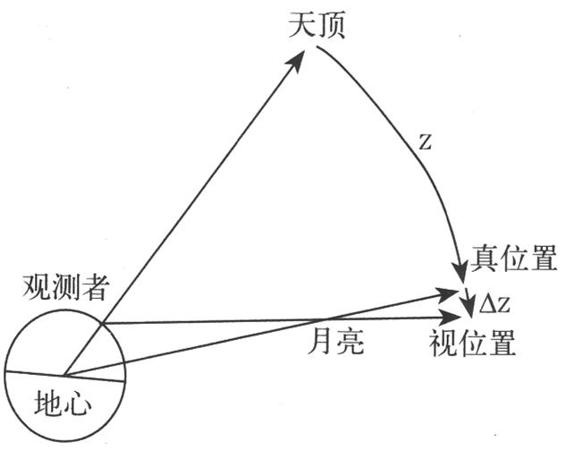
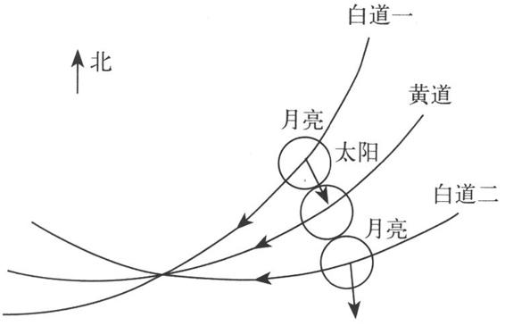
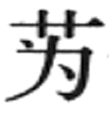
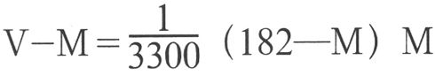

这一时期天文学发展的主要特征是，一系列天文数据趋于精确，一批新的天文现象的发现，历法中的数学计算方法，向着严密化和公式化方向演进，这些使我国古代天文历法体系从内容和形式，都达到了较完善的境界。
祖冲之（429—500），字文远，祖籍范阳（今河北涞水县），是刘宋时期杰出的科学家。他对圆周率的研究，使他闻名遐迩，其实他对科学技术的贡献远非止于此，在天文历法上，亦堪称一大家。463年他撰成大明历，内中多所创新，是为我国古代最著名的历法之一。
把岁差现象首次引入历法，是祖冲之的一大贡献。由于我国古代历法在计算日月五星的位置时，是以冬至太阳所在恒星间的位置作为基准点的，所以岁差概念和数值的引进，就使得这一基准点的位置得到较好的校正，从而使日月五星位置推算的准确度得到根本的保证。［53］
大明历取回归年长度为365.2428日，误差仅46秒，这是我国古代所用的最佳值之一。［54］该值的取得，与祖冲之巧妙、正确地应用东汉刘洪等人在173年的日影测量结果有关，还与祖冲之发明的冬至时刻测算法密切相关。该测算法是在测量冬至前后数日午中的日影长度的基础上，并在假定这前后数日影长的变化是均匀的前提下，用线性比例的方法求取冬至的具体时刻，它嗣后成为我国古代冬至时刻的经典测算法。［55］
在回归年和朔望月长度精确测算的基础上，祖冲之还很好地选定了十分准确的新闰周：391年144闰，这是我国古代得到的最佳闰周。
在大明历中，祖冲之还第一次明确地指出了交点月（月亮相继两次通过同一个黄白交点的时间间隔）的长度值：27.2122日，误差仅1秒左右，已达到了相当高的精度水平。［56］
对于五星会合周期，祖冲之也进行了重新测量，得木星398.903日（误差0.019日），火星780.031日（误差0.094日），土星378.070日（误差0.022日），金星583.931日（误差0.009日），水星115.880日（误差0.002日），［57］从总体上看，其精度达到了前所未有的高度。
为争取大明历得以颁行，祖冲之曾与守旧派戴法兴辩论，写下了驳议之文，是科学思想史上的名篇。他坚持改革，反对“信古而疑今”的思想，他“愿闻显据，以核理实”的实事求是态度，他“考影弥年，穷察毫微”［58］的实践精神，至今仍闪烁着熠熠光芒，照耀着人们在崎岖的科学道路上攀登。
张子信，清河（今河北清河县）人，是北魏、北齐间著名的天文学家。他花了三十多年的时间，隐居于一海岛，专心致志地用浑仪观测日月五星的运动。570年前后，他获得了在我国天文学史上具有重大意义的三大发现：
一是关于太阳视运动不均匀性的发现。张子信由观测得知：太阳视运动从平春分到平秋分（时经半年）所历的黄道度数，要比从平秋分到平春分（亦时经半年）所历度数少若干度，于是，前半年太阳视运动的速度自然要比后半年来得慢，这是他导出这一发现的途径之一。途径之二，是循着与东汉刘洪当年相似的方法达到的。张子信指出：欲使交食发生时刻的预推值与实际相吻合，除虑及月亮运动不均匀性的影响外，还须加上某一改正值（称为“入气差”）［59］，该值的正负、大小与二十四节气有密切和稳定的关系。这是刘洪“消息术”的再发现。更重要的是，张子信由此升华出太阳视运动不均匀性的结论，给予“入气差”以合理的解释。他还推算出了二十四节气“入气差”（即二十四节气时，视太阳实际行度与平均行度之差）的具体数值，这是我国古代对太阳视运动不均匀性现象所作的最早的明确的定量描述。
二是关于五星运动不均匀性的发现。张子信发现，依据传统的方法推算得的五星晨见东方的时刻，往往与实际天象不相符，常有应见而不见，或不应见而见的情况发生。由进一步的考察，他确认五星晨见东方时刻的这种超前或滞后及其时间的长短（称为“入气加减”［60］），也与二十四节气有紧密的、稳定的关系。张子信以为，这正是五星运动不均匀性的具体反映。同样，他也推算出了五星二十四节气“入气加减”的明确数值，从而实现了五星运动不均匀性的初始的定量描述。
三是关于食差的发现，这是关于交食研究的一大进展。张子信认识到简单地根据传统的食限法，还不能断然判定日食发生与否，即在已入食限的条件下，“合朔在日道里则日食，若在日道外，虽交不亏”［61］，即如果当时月亮在黄道之北，则必发生日食无疑；而如果当时月亮在黄道之南，则不发生日食。这里，张子信是发现了月亮视差对日食的影响。月亮视差是指在地面上的观测者看来，月亮真实位置的天顶距（Z）总比视位置的天顶距（Z + ΔZ）来得小的一种天文现象。（见图14—5）对日食而言，（见图14—6）当月亮在黄道之北时，由于视差使月亮的视位置下降，令日月的距离更靠近，所以只要入食限则必发生日食；而当月亮在黄道之南时，也由于视差使月亮的视位置下降，遂令日月的距离增大，所以即使已入食限，还是不发生日食。这就是张子信关于食差的发现的真实天文含义。

图14-5 视差示意图

图14-6 月亮视差对日食的影响示意图
张子信的这三大发现都具有划时代的意义，它们为天文历法体系的完善增添了全新的内容。
刘焯是隋代杰出的天文学家，他于604年撰成皇极历，后世历家咸称其妙。［62］他最先把张子信的三大发现引入历法，并成功地解决了这三大发现的具体计算和合理应用问题。
在皇极历中，载有二十四节气太阳视运动不均匀性改正数值表（日躔表），这是流传至今的第一份完整的日躔表，其前身即张子信的“入气差”。在应用日躔表进行任一时刻的改正值的计算时，刘焯首创了等间距二次差内插法。这一数学方法的物理意义，是把某一时段内太阳视运动的速率看成是匀加速或匀减速的。这一方法较好地解决了太阳视运动不均匀性的计算问题。在这一基础上，刘焯成功地解决了同时考虑日、月运动不均匀性影响的定朔计算方法，使真正朔日时刻的计算精度得以提高。
在皇极历中，还载有五星入气加减的数值表，其源由亦当来自张子信。重要的是，刘焯首创了推算五星晨见东方时刻的三段计算法：平见—常见—定见法。即先把太阳和五星的运动视作是匀速的，由此可算得平见时刻（T0）；次由五星入气加减表求得五星运动不均匀性改正值（Δt），则常见时刻= T0 + Δt；再由日躔表算出太阳运动不均匀性改正值（ΔT），于是定见时刻= T0 + Δt + ΔT。
关于日月交食的研究，在皇极历中载有“推应食不食术”和“推不应食而食术”，这是对张子信第三大发现的具体补充和发展。此外，刘焯还首次提出了食差对日食食分大小的影响的具体算法，以及交食起讫时刻的计算方法，并对于交食的亏起方位作了前所未有的详细讨论。
刘焯还是黄道和白道宿度变换的首创者。他曾测得75年差一度的新岁差值，这是一个相当准确的数值。他对南北相距千里，日影长度相差一寸的旧说，持反对的态度，并提出由实测加以验证的具体建议。可惜这一建议连同他的皇极历均未被采纳，但他的科学业绩却是不可泯灭的。
和刘焯同时的另一位天文学家张胄玄，也吸取了张子信的工作成果，约于610年编成大业历。虽然大业历对于类似问题的处置不如皇极历周全，却也别树一帜，尤其在五星运动的研究上最为突出。张胄玄测得五星会合周期分别为：木星398.882日（误差0.002日），火星779.926日（误差0.011日），土星378.090日（误差0.002日），金星583.922日（误差小于0.001日），水星115.879日（误差0.001日），［63］它们是我国古代所取得的最佳成果。又，张胄玄对五星在一个会合周期内的动态进行描述时，以为在某些动态段中，五星的运行速率是依等差级数变化的，并解决了等级差数求和的问题，这在天文学上和数学上都是有重要意义的。
一行（683—727），魏州昌乐（今河南南乐县）人，俗名张遂，唐代名僧，在天文学上有很高的造诣，他对我国古代天文历法体系的贡献主要有如下三个方面：［64］
728年，张说奏上一行完成的大衍历。一行为编此历，进行了大量的天文实测，并对中外历法系统进行了深入的研究，在继承传统的基础上，颇多创新。
从历法的编次体例上看，共计分为七章：［65］“步中朔”（计算节气、朔望等），“步发敛”（计算七十二候等），“步日躔”（关于太阳运动的计算），“步月离”（关于月亮运动的计算），“步轨漏”（计算日影及昼夜漏刻长度），“步交会”（日月交食的计算）和“步五星”（关于五星运动的计算）。它们具有结构合理、逻辑严密、体系完整的特点，后世历法大都因之，成为历法体例的楷模。从内容上考察，其创新之处主要有：
对太阳视运动不均匀性进行新的描述，纠正了张子信、刘焯以来日躔表的失误，提出了我国古代第一份从总体规律上符合实际的日躔表。在利用日躔表进行任一时刻太阳视运动改正值的计算时，一行发明了不等间距二次差内插法，这是对刘焯相应计算法的重要发展。
一行对于五星运动规律进行了新的探索和描述，确立了五星运动近日点的新概念，明确进行了五星近日点黄经的测算工作。如他以为728年时，木、火和土三星的近日点黄经分别为345.1°，300.2°和68.3°，这与相应理论值的误差分别为9.1°，12.5°和1.6°，此中土星近日点黄经的精度已经达到了很高的水平。一行还首先阐明了五星近日点进动的概念，并定出了每年进动的具体数值。在对五星运动不均匀性进行描述时，一行发明了五星盈缩运动的数值表，它是以五星近日点为起算点，每隔15°定出一个五星实际行度与平均行度之差的数值表格。据此，再应用等间距二次差内插法，推求任一时刻五星运动不均匀的改正值，这一表格和方法均较张子信等人的“入气加减”法前进了一大步。
大衍历还首创了九服晷漏、九服食差等的计算法。前代各历法在计算晷漏、食差时，都仅局限于京都所在地，其结果并不适应全国广大地区（即九服之地）的实际情况，所以新算法的提出，就把原先仅合用于京师的历法，全面推广为真正的全国性历法，其意义可想而知。而且，在新算法中，还包含有一行编成的世界上最早的类似正切函数的计算表，更具有重大的数学意义。
为编制大衍历的需要，一行和梁令瓒等人共同制作了用于天体位置（赤道、黄道、白道和地平四种坐标）测量的新仪器——黄道游仪。该仪器是在唐初天文学家李淳风所制的浑天黄道仪的基础上演变、发展而成的。黄道游仪有三重环组构成：外面一重是固定不动的，包括有地平、子午（南北方向）和卯酉（东西方向）三个环；中间一重是黄道环、赤道环和白道环三个环，它们均可绕极轴转动；里面一重是夹有窥管的四游环，可以灵活地照准任一天体。另外，李淳风曾在黄道环上打了249对孔，令白道环每经约27日移动一对孔，以适应黄白交点沿黄道不断西移的天文现象。对此，一行等人稍作改进，他们分别在黄道环和赤道环上每隔一度打一个孔，计365个小孔，前者与李淳风的用意相当，后者则是为适应岁差现象而设计的。
一行和梁令瓒还共同制作了用于演示天象和报时的水运浑天仪，这是对东汉张衡水运浑象的发展，既能自动地表演天球和日月的运动，还能令立于地平环上的两个木人按刻自然击鼓，依辰自然打钟，是为自动报时器的始祖。
724—725年间，一行分别派人到北起铁勒（今俄罗斯贝加尔湖附近，约北纬51°），南至林邑（今越南中部，约北纬18°）的13个地点，测量它们的北极出地高度（即地理纬度）、冬夏至和春秋分日影长度，以及冬夏至昼夜漏刻长度等数据，为九服晷漏等历法问题的计算准备必要的条件。
在这项工作中，一行精心选定了滑州白马（今河南滑县）、汴州浚仪（今河南开封市）、许州扶沟（今河南扶沟县）和蔡州上蔡（今河南上蔡县）四处，它们大体位于同一地理经度上，且均地处平原，便于距离的丈量。在这四处，除进行上述数据的测定外，还丈量了它们彼此间的水平距离。具体测量工作由另一位天文学家南宫说负责。一行则由这四处的距离差与北极出地高度差的比例关系的分析中，得出南北相距“大率三百五十一里八十步，而极差一度”［66］的重要结论，即以为子午线每1°长131.11公里。虽然这一数值比近代的结果偏大约20公里，但它毕竟是世界上第一次子午线1°长度的实测工作。
曹士是唐代民间天文学家。在780—783年间，他撰成符天历，这仅是一种民间小历，似不登大雅之堂，但实际上，却在历法史上占有相当重要的地位。
符天历选取唐高宗显庆五年（660）为历元，以这种近距历元取代传统的上元法。所谓上元是一种理想的历元，它要求一系列天文现象同起始于一点，这实际上是不可能的，强求之，就不能不带有牵强附会的因素，而且自上元到实际求算年之间往往相距极其庞大的年份，所以上元法存在既使计算繁杂，又使计算结果失真的弊端。曹士的改革，正是针对这种弊病采取的有效措施。又，传统历法的天文数据，一般均以分数表示。对此，曹士选用了万分法，即取分母为一万，这既使各天文数据呈一目了然的形式，又使计算便捷。这两项改革，后为元代授时历所采纳。
此外，曹士开辟了历法数值表格及其计算公式化的蹊径。符天历对于日躔表及太阳视运动不均匀性改正的计算进行了极重要的改革，建立了太阳实际运行度（V）与平均运行度（M）之间的数学关系式：［67］

式中M为所求日距冬至时刻的天数，亦即度数。该式实质上是刘焯二次差内插法的一种特殊形式，它既具有计算上的简便性，又具有数学上的严密性。它的出现是我国古代历法体系进一步公式化、数学化的重要标志。
这种公式化、数学化的趋势，在唐代边冈的崇玄历（892）中得到了极大的发展。边冈把曹士上述公式所展示的数学方法，明确归结为“相减相乘”法，并把该法推广应用于黄赤道宿度变换、月亮极黄纬和交食等历法问题的计算中，均建立了相应的算式。不但如此，边冈还首创了计算每日中午日影长度的二个三次函数式，［68］把传统的二十四节气晷影长度表格及其每日晷长的计算公式化了。他还曾定出二个计算太阳视赤纬的算式，［69］系为四次函数式，这就把传统的二十四节气太阳视赤纬表格及每日太阳视赤纬的计算公式化了。它们在天文学和数学上都具有很重要的意义。
唐代天文学家徐昂在其宣明历（822）中对日食计算所作的重要改进，也是这时天文历法的重要事件。徐昂把月亮视差对日食的影响，区分为“时差”、“气差”、“刻差”和“加差”［70］四种，它们都与日食发生的节气先后及辰刻早晚有关。其中，时差是从定朔时刻求食甚时刻的修正值，而后三者是对去交度（月亮与黄白交点的度距）的修正值，用以判断日食发生与否以及食分大小的计算。对此，徐昂均提出了近似的、经验性的计算方法。由于加差仅是一项微小的订正，后世历法均略而不计，于是徐昂首创的时差、气差和刻差，被合称为日食三差法，成为后世历法遵循的经典方法。